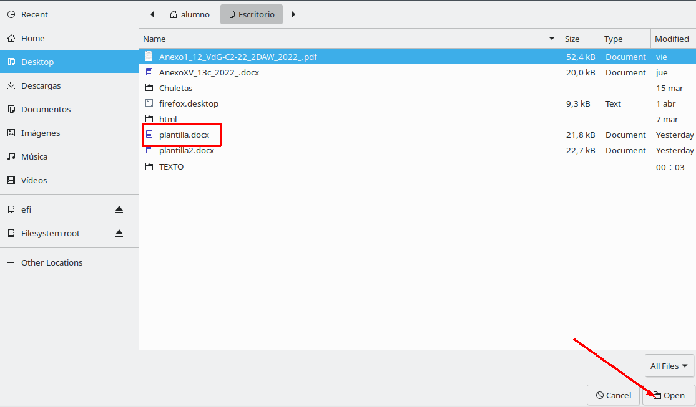

Esto es una ayuda para poder subir los anexos II Y IV
-
Vistazo general
Esta vista muestra un desplegable, en el que elegiremos el tipo de anexo a subir, un buscador de archivos y un botón de aceptar los cambios
-
1. Lo primero que debemos hacer es llamar a nuestro documento Anexo2 o Anexo4 con la extensión .docx
2. En segundo lugar, debemos rellenar la cabeceras del anexo que queramos rellenar con estos datos:
Anexo 2:
Anexo 4:
3. Finalmente, debemos rellenar la tabla con los contenidos adecuados antes de subir la plantilla
-
1. El buscador de archivos, te permite buscar el archivo a subir de tu ordenador
Es tan simple como elegir tu archivo y hacer click en Open
 -
2. Cuando todo este listo, hacer click en este boton para generar los anexos

Explicación. Pasos previos a seguir para subir el archivo:
Explicación del entorno y pasos para subir un archivo: